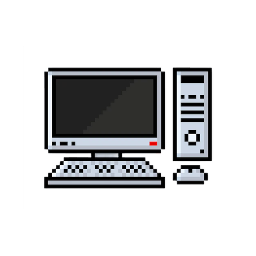

Laptop
A laptop computer, sometimes called a notebook computer by manufacturers, is a battery- or AC-powered personal computer generally smaller than a briefcase that can easily be transported and conveniently used in temporary spaces such as on airplanes, in libraries, temporary offices, and at meetings.
Portable
Laptop is a small size personal computer that can be easily moved and used in a variety of locations not like the PC's size is huge and heavy, and you can use it as long as your laptop has charge in it.
Keybaord & Mouse
Laptops have internal mouse called touchpad and it has a built in keyboard, but is also compatible with external keyboard and mouse but the number of ports are less in laptops.
Games
Processor for Gaming Laptops are pretty powerful, others not so much. But the processor of computer is the most powerful. You can play games as like as the computer as long as your laptop can handle it.
Same as PC
Laptops are designed to have all of the functionality of a desktop computer, which means they can generally run the same software and open the same types of files. They have the same parts to build one.